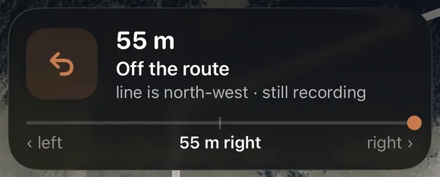

Start from your door, size it by the time you have, and decide the hard parts before you leave. A good route is one you do not have to think about while you run: the right length, a shape that suits the day, climbing you expected, ground you can run on, light if it is dark, and water if it is long. Once that is settled, put the route on your phone or watch and let the turns come to you.
>1.5×the energy per metre of the flat when running up a 10% climbMinetti et al. 2002
3 shapesout-and-back, loop or point-to-point: pick the one that suits the dayThis guide
7 daysof runs that Flyover replays in 3D for freeAera
This guide goes through each choice, how to estimate how long a route will take, what to look for in a route app on iPhone and Apple Watch, and how Aera does it.
Start with the distance
Most runs are really sized by time: "easy, 40 minutes" before work, or an hour on Sunday. So start with the minutes you have and the pace you run when it is easy, and turn that into a distance. How far will I run? does that sum for you and can estimate your easy pace from a recent race.
Start from your door. A route that begins and ends at home removes the drive, the parking and one more reason to skip. Most towns have more runnable ground within a couple of kilometres than you think.
Measure, do not guess. Draw the line on a map that shows the distance as you go. Bends, detours around blocks and the way back add up.
Plan a shortcut. Know one or two places where you can cut the route short if your legs or the weather turn on you.
Out-and-back, loop or point-to-point
Out-and-back. Run half your time or distance, turn around, come home the same way. It is the easiest to plan and to pace, you already know the way back, and you can turn early at any moment. If the way out is uphill or into the wind, the way back is quicker. The downside is seeing the same ground twice.
Loop. New ground the whole way and no doubling back. A loop is the most pleasant shape for most people, but it is harder to cut short once you are on the far side, and it takes more planning to land on the distance you want. A smaller loop you can repeat, like a park circuit, gives you the variety of a loop with an easy way out.
Point-to-point. From A to B, then a train, a bus or a lift home. It suits a run home from work or a long run along a river or coast. Check the way back before you go, especially late in the day.
Hills, and what they do to your time
Climbing is where most route plans go wrong. Two routes of the same length can take very different times. Minetti and colleagues (2002) measured runners on a treadmill tilted from steep descent to steep climb: on a 10 percent climb, running cost more than one and a half times as much energy per metre as running on the flat. A gentle descent was cheaper than the flat, but past a certain steepness the cost rose again because your legs brake on every stride. Vernillo and colleagues (2017) reviewed the same pattern and the extra strain steep downhills put on the muscles.
Climbing costs far more than the flat. Descending gives only some back.
Illustration drawn from the curve Minetti and colleagues (2002) fitted to their treadmill measurements. The energy each metre of running costs on each slope, against the flat. A 10% climb costs more than one and a half times as much; a gentle descent costs less, but past a certain steepness the cost rises again because your legs brake on every stride.
For planning, that means:
Look at the total climb, not just the distance. A flat 8 km and a hilly 8 km are different runs. Expect the hilly one to be slower at the same effort.
Put the climb where you want it. Climbing early, while you are fresh, and coming home downhill or flat is easier on an easy day. Hill repeats are the opposite: you want the climb.
Do not judge your fitness by pace on a hilly route. Grade-adjusted pace turns each climb and descent into the flat pace it was worth, so a slow climb gets the credit it earned. More in what grade-adjusted pace is.
Surface
Pavement and roads. Fast, predictable, usually lit, and easy to measure. You share them with traffic, crossings and people.
Park paths and gravel. Softer underfoot and calmer, a little slower. Good for easy runs.
Trails. Roots, rocks, mud after rain and more climbing. Your pace will drop at the same effort, and that is the ground, not your fitness. Give yourself more time and more attention.
A running track. Exact distances and no traffic, which makes it the best place for intervals. Dull for a long run.
Mixing surfaces is fine. What matters most is that the ground suits the session: a tempo run wants smooth, steady ground, an easy run can wander.
Light and safety
In the dark, choose lit streets and paths you know, and save unlit trails for daylight.
Be seen. Wood and colleagues (2005) tested how well drivers recognised pedestrians at night. Reflective strips on the moving parts of the body, such as ankles and knees, made people far easier to recognise than a reflective vest alone, and dark clothing made them hard to spot at all. A headlamp or a clip-on light helps you see the ground too.
Where there is no pavement, run facing oncoming traffic so you can see what is coming.
Tell someone your route or share your location when you run alone somewhere quiet, and carry your phone.
Know your exits. On a long route, note where the roads, stations or busy places are in case you need to stop.
Water
The American College of Sports Medicine position stand on fluids (Sawka and colleagues, 2007) recommends a personal plan rather than a fixed amount: drink enough to avoid losing a lot of body weight through sweat, and do not drink so much that you gain weight during exercise. Needs vary widely with heat, body size and pace.
Many runners manage short, easy runs in mild weather without carrying anything.
For long or hot runs, plan water into the route: drinking fountains, shops, cafés, or a loop that passes home so you can leave a bottle by the door.
Check that fountains are actually turned on. Many are switched off in winter.
How long will it take?
A simple way to estimate a route before you go:
The honest time for a route is a range from your own runs, not one number from a map.
Start with the flat sum. Distance divided by your easy pace. If you are working the other way round, from minutes to distance, use how far will I run?
Add time for climbing. The more the route climbs, the slower you will be at the same effort. Steep descents do not give all of it back.
Add time for stops. Crossings, lights, gates and a drink. Moving time and the time on the clock when you get home are not the same thing.
Trust your own history most. The best estimate is a range from your recent runs on similar ground, not one number from a map. More in how long will this route take me?
Route options on iPhone and Apple Watch
There are three common ways to get a planned route onto your wrist or into your ear:
A map app's walking directions. Good for getting from A to B on foot. They are built to find the quickest way somewhere, not a run of a set distance, and they do not plan a loop for you.
A GPX file. GPX is the common file format for routes. Race organisers, trail websites, clubs and friends share routes this way, and most running apps can open one.
A running app with a route planner. You draw the route, the app snaps it to paths and sends it to the watch, and the watch guides you while you run.
Whatever you use, check these before you rely on it on a run:
Does the line keep to real paths, or does it cut straight through buildings and fields?
Does it show the distance while you draw?
Can it open a GPX file?
Does the watch warn you before each turn, with a tap or a voice?
Does it tell you when you have left the route?
Does it keep working with no signal, in a forest or the hills?
What does it cost, and what is behind a subscription?
How Aera does this

Off the route, in AeraWhen you leave the planned line, the banner says how far away you are and which way the line lies, and a rail shows which side of it you are on. The run keeps recording.
Aera, for iPhone and Apple Watch
The route planner in Aera is free. Tap the map to draw a route and the line keeps to real paths, with the distance counting as you draw. Or open a GPX file. Then follow it turn by turn on your iPhone or Apple Watch, spoken aloud if you want, even with no signal. Every turn comes before you reach it, with a word when you leave the route and when you are back on it. On the watch you can record the run on its own and feel each turn on your wrist.
Turn by turn is free too. Premium keeps every route you draw; the first one is kept for free. After the run, Flyover replays it in 3D over the real ground, free for runs from the last seven days.
Aera reads Apple Health and works on iPhone and Apple Watch. There is no account. A planned line cannot see a locked gate, fresh mud or roadworks, so keep an eye on where you are going.
Start from your door. Work out the distance from the time you have and your easy pace, then pick a shape: out-and-back, loop or point-to-point. Check how much it climbs, what the ground is like, whether it is lit if you run in the dark, and where you can get water on a long or hot run. Then put the route on your phone or watch so you do not have to think about turns on the way.
Is a loop or an out-and-back route better for running?
It depends on the day. An out-and-back is the simplest: turn around at half your time, you already know the way home, and you can cut it short at any point. A loop gives you new ground the whole way and no doubling back, but it is harder to shorten once you are far from home. A point-to-point run needs a way back, so it suits a run home from work.
How long will a running route take me?
Divide the distance by your easy pace on similar ground, then add time for climbing and for stops at crossings. Climbing costs much more than the flat, so a hilly route takes longer than its distance suggests. The most honest answer is a range from your own recent runs on similar routes, not a single number.
Can I get turn-by-turn running directions on Apple Watch?
Yes, with an app that sends a planned route to the watch. Aera does it for free: draw a route on the map that keeps to real paths, or open a GPX file, then follow it turn by turn on your iPhone or Apple Watch, spoken aloud if you want, even with no signal. You get a word when you leave the route and when you are back on it.
Minetti AE, Moia C, Roi GS, Susta D, Ferretti G. Energy cost of walking and running at extreme uphill and downhill slopes. Journal of Applied Physiology. 2002;93(3):1039-1046.
Vernillo G, Giandolini M, Edwards WB, et al. Biomechanics and Physiology of Uphill and Downhill Running. Sports Medicine. 2017;47(4):615-629.
Wood JM, Tyrrell RA, Carberry TP. Limitations in drivers' ability to recognize pedestrians at night. Human Factors. 2005;47(3):644-653.
Sawka MN, Burke LM, Eichner ER, Maughan RJ, Montain SJ, Stachenfeld NS. American College of Sports Medicine position stand. Exercise and fluid replacement. Medicine and Science in Sports and Exercise. 2007;39(2):377-390.